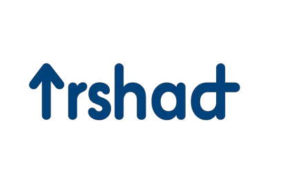
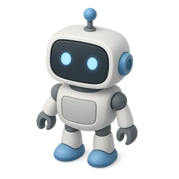
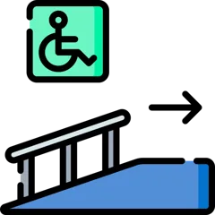
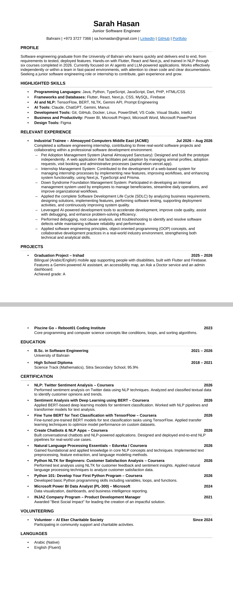

I learn fast
New framework, new domain, new codebase: I get comfortable quickly and ask the right questions early. Right now that energy is going into AI agents and how LLMs plan and use tools.
AI & NLP courses finished in 2026~/bahrain/junior-software-engineer
I learn fast, build end to end, and I'm all in on AI agents.
A software engineering graduate looking for her first role or internship: somewhere I can contribute from day one, learn from a great team, and keep growing.
How I work
No skill bars or percentages. Here's what I bring to a team, and the proof behind it.
New framework, new domain, new codebase: I get comfortable quickly and ask the right questions early. Right now that energy is going into AI agents and how LLMs plan and use tools.
AI & NLP courses finished in 2026I like owning the whole path: understanding what people need, designing it, writing clean code, testing, and helping it go live.
requirements → design → build → test → deployThe work I'm proudest of helps someone directly: an app for people with disabilities, a system for a Down syndrome foundation, and time volunteering in my community.
Irshad · DSF system · Al Eker volunteerExperience
Almoayyed Computers Middle East put me in a professional team, on live projects, from my first week. I worked across the full lifecycle, tracked down bugs to their root cause, and used AI tools to move faster without cutting corners.
Added features and smoothed out the workflows a company uses to run its internship program.
Helped build the internal tool staff use to manage beneficiaries and their day-to-day work.
Designed and built the adoption platform prototype on my own, from browsing animals to the staff dashboard. See it live ↗
Graduation project · 2025 – 2026 · Graded A
People with disabilities in Bahrain and their families often jump between websites, phone calls and word of mouth to find a doctor, a centre or a bus that can take a wheelchair. Irshad (إرشاد, “guidance”) puts all of it in one bilingual app. I built it with two teammates as our graduation project.

Choose a category
Autism: specialists, therapy centres and community events, filtered for you.

Irshad Assistant runs on Gemini 2.5 Flash. It detects whether you wrote in Arabic or English, answers in the same language, and stays on topic. Users can also ask by voice.

Live location with clustered markers for ramps, elevators, accessible toilets and parking, so a trip can be planned before leaving home.
Users send questions to verified doctors and chat with them in the app. Doctors get their own dashboard and inbox once an admin approves their account.
More projects
A rescued animal is only a few clicks away from a new home. I built this prototype on my own: people can browse animals as guests, apply to adopt, and book a supervised visit, while sanctuary staff manage everything from an admin dashboard.
The internal tool ACME uses to run its internship program end to end: shortlisting, current & completed interns, training topics and feedback, behind a role-based dashboard for HR, department heads, mentors and super admins. I joined an existing codebase and shipped features and workflow fixes across it.
An intense, sink-or-swim coding bootcamp. Weeks of Go, logic and sorting algorithms that taught me how to teach myself.
Journey
Every year I've added something new. The next stop is the one I'm most excited about.
Led product development in the INJAZ Company Program and won Best Social Impact. Started at the University of Bahrain.
Survived the Piscine Go bootcamp at Reboot01.
Earned Microsoft's Power BI Data Analyst cert and started volunteering with Al Eker.
Deep dive into NLP and BERT, graduated with an A project, and interned at ACME.
Joining a team where I can build with AI and grow fast. Maybe yours?
Toolkit
Curriculum vitae
Everything on this site in a clean, ATS-friendly format for your hiring team.
Contact
I'm looking for a place to learn, contribute and grow. If your team builds things that matter, especially with AI, I'd love to talk.
